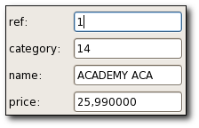

| Top |
GdauiBasicFormGdauiBasicForm — Form widget mapping the values contained in a GdaSet |
 |
| gboolean | can-expand-v | Read |
| gboolean | entries-auto-default | Read / Write |
| gboolean | headers-sensitive | Read / Write |
| gpointer | paramlist | Read / Write |
| gboolean | show-actions | Read / Write |
| gpointer | xml-layout | Write |
| void | activated | Run First |
| void | holder-changed | Run First |
| void | layout-changed | Run First |
| void | populate-popup | Run First |
GObject ╰── GInitiallyUnowned ╰── GtkWidget ╰── GtkContainer ╰── GtkBox ╰── GdauiBasicForm ╰── GdauiRawForm
GdauiBasicForm implements AtkImplementorIface, GtkBuildable and GtkOrientable.
The GdauiBasicForm widget is a form containing an entry for each GdaHolder object contained in a GdaSet (specified when the form is created). A typical usage is when the user is requested to enter a value which will be used in a statement (without any error checking for clarity):
GdaStatement *stmt;
GdaSet *params;
stmt = gda_sql_parser_parse_string (parser, "SELECT * FROM customers where name LIKE ##name::string", NULL, NULL);
gda_statement_get_parameters (stmt, ¶ms, NULL);
GtkWidget *form;
gint result;
form = gdaui_basic_form_new_in_dialog (params, NULL, "Customer search", "Enter Customer search expression");
result = gtk_dialog_run (GTK_DIALOG (form));
gtk_widget_destroy (form);
if (result == GTK_RESPONSE_ACCEPT) {
// execute statement
GdaDataModel *model;
model = gda_connection_statement_execute_select (cnc, stmt, params, NULL);
[...]
}
g_object_unref (params);
g_object_unref (stmt);
The default layout within a GdauiBasicForm is a vertical column: all the data entry widgets are aligned
in a single column. This behaviour can be changed using the gdaui_basic_form_set_layout_from_file() method or
setting the xml-layout property.
<!ELEMENT gdaui_layouts (gdaui_form | gdaui_grid)>
<!ELEMENT gdaui_form (gdaui_section | gdaui_column | gdaui_notebook)*>
<!ATTLIST gdaui_form
name CDATA #REQUIRED
container (columns|rows|hpaned|vpaned) #IMPLIED>
<!ELEMENT gdaui_section (gdaui_section | gdaui_column | gdaui_notebook)*>
<!ATTLIST gdaui_section
title CDATA #IMPLIED >
<!ELEMENT gdaui_notebook (gdaui_section | gdaui_column | gdaui_notebook)*>
<!ELEMENT gdaui_column (gdaui_entry | gdaui_placeholder)*>
<!ELEMENT gdaui_entry EMPTY>
<!ATTLIST gdaui_entry
name CDATA #REQUIRED
editable (true|false) #IMPLIED
label CDATA #IMPLIED
plugin CDATA #IMPLIED>
<!ELEMENT gdaui_placeholder EMPTY>
<!ATTLIST gdaui_placeholder
id CDATA #REQUIRED
label CDATA #IMPLIED>
Example 1. A GdauiBasicForm layout example
1 2 3 4 5 6 7 8 9 10 11 12 13 14 15 16 17 18 |
<?xml version="1.0" encoding="UTF-8"?> <gdaui_layouts> <gdaui_form name="customers" container="hpaned"> <gdaui_section title="Summary"> <gdaui_column> <gdaui_entry name="id" editable="no"/> <gdaui_entry name="name"/> <gdaui_entry name="comments" plugin="text"/> <gdaui_entry name="total_orders" label="Total ordered" plugin="number:NB_DECIMALS=2;CURRENCY=€"/> </gdaui_column> </gdaui_section> <gdaui_section title="Photo"> <gdaui_column> <gdaui_entry name="photo" plugin="picture"/> </gdaui_column> </gdaui_section> </gdaui_form> </gdaui_layouts> |
GtkWidget *
gdaui_basic_form_new (GdaSet *data_set);
Creates a new GdauiBasicForm widget using all the GdaHolder objects provided in data_set
.
The global layout is rendered using a table (a GtkTable), and an entry is created for each
node of data_set
.
Since: 4.2
GtkWidget * gdaui_basic_form_new_in_dialog (GdaSet *data_set,GtkWindow *parent,const gchar *title,const gchar *header);
Creates a new GdauiBasicForm widget in the same way as gdaui_basic_form_new()
and puts it into a GtkDialog widget. The returned dialog has the "Ok" and "Cancel" buttons
which respectively return GTK_RESPONSE_ACCEPT and GTK_RESPONSE_REJECT.
The GdauiBasicForm widget is attached to the dialog using the user property "form".
data_set |
a GdaSet object |
|
parent |
the parent window for the new dialog, or |
[allow-none] |
title |
the title of the dialog window, or |
[allow-none] |
header |
a helper text displayed at the top of the dialog, or |
[allow-none] |
Since: 4.2
GdaSet *
gdaui_basic_form_get_data_set (GdauiBasicForm *form);
Get a pointer to the GdaSet object which
is modified by form
Since: 4.2
gboolean
gdaui_basic_form_is_valid (GdauiBasicForm *form);
Tells if the form can be used as-is (if all the parameters do have some valid values)
Since: 4.2
gboolean
gdaui_basic_form_has_changed (GdauiBasicForm *form);
Tells if the form has had at least on entry changed since form
was created or
gdaui_basic_form_set_as_reference() has been called.
Since: 4.2
void
gdaui_basic_form_reset (GdauiBasicForm *form);
Resets all the entries in the form to their original values
Since: 4.2
void
gdaui_basic_form_set_as_reference (GdauiBasicForm *form);
Tells form
that the current values in the different entries are
to be considered as the original values for all the entries; the immediate
consequence is that any sub-sequent call to gdaui_basic_form_has_changed()
will return FALSE (of course until any entry is changed).
Since: 4.2
void gdaui_basic_form_entry_set_visible (GdauiBasicForm *form,GdaHolder *holder,gboolean show);
Shows or hides the GdauiDataEntry in form
which corresponds to the
holder
data holder
Since: 4.2
void gdaui_basic_form_entry_grab_focus (GdauiBasicForm *form,GdaHolder *holder);
Makes the data entry corresponding to holder
grab the focus for the window it's in. If holder
is NULL,
then the focus is on the first entry which needs attention.
Since: 4.2
void gdaui_basic_form_entry_set_editable (GdauiBasicForm *form,GdaHolder *holder,gboolean editable);
Sets the GdauiDataEntry in form
which corresponds to the
holder
parameter editable or not. If holder
is NULL, then all the parameters
are concerned.
form |
a GdauiBasicForm widget |
|
holder |
[allow-none] | |
editable |
|
Since: 4.2
void
gdaui_basic_form_set_entries_to_default
(GdauiBasicForm *form);
For each entry in the form, sets it to a default value if it is possible to do so.
Since: 4.2
GtkWidget * gdaui_basic_form_get_entry_widget (GdauiBasicForm *form,GdaHolder *holder);
Get the GdauiDataEntry in form
which corresponds to the holder
place.
Since: 4.2
GtkWidget * gdaui_basic_form_get_label_widget (GdauiBasicForm *form,GdaHolder *holder);
Get the label in form
which corresponds to the holder
holder.
Since: 4.2
void gdaui_basic_form_set_layout_from_file (GdauiBasicForm *form,const gchar *file_name,const gchar *form_name);
Sets a form layout according an XML description contained in file_name
, for the form identified
by the form_name
name (as an XML layout file can contain the descriptions of several forms and grids).
Since: 4.2
GtkWidget * gdaui_basic_form_get_place_holder (GdauiBasicForm *form,const gchar *placeholder_id);
Retreives a pointer to a place holder widget. This feature is only available if a specific
layout has been defined for form
using gdaui_basic_form_set_layout_from_file().
Since: 4.2
void gdaui_basic_form_add_to_size_group (GdauiBasicForm *form,GtkSizeGroup *size_group,GdauiBasicFormPart part);
Add form
's widgets specified by part
to size_group
(the widgets can then be removed using gdaui_basic_form_remove_from_size_group()).
Since: 4.2
void gdaui_basic_form_remove_from_size_group (GdauiBasicForm *form,GtkSizeGroup *size_group,GdauiBasicFormPart part);
Removes form
's widgets specified by part
from size_group
(the widgets must have been added using gdaui_basic_form_add_to_size_group()).
Since: 4.2
void gdaui_basic_form_set_unknown_color (GdauiBasicForm *form,gdouble red,gdouble green,gdouble blue,gdouble alpha);
Defines the color to be used when form
displays an invalid value. Any value not
between 0. and 1. will result in the default hard coded values to be used (grayish).
form |
a GdauiBasicForm widget |
|
red |
the red component of a color |
|
green |
the green component of a color |
|
blue |
the blue component of a color |
|
alpha |
the alpha component of a color |
Since: 5.0.3
“can-expand-v” property“can-expand-v” gboolean
Owner: GdauiBasicForm
Flags: Read
Default value: FALSE
“entries-auto-default” property“entries-auto-default” gboolean
Owner: GdauiBasicForm
Flags: Read / Write
Default value: FALSE
“headers-sensitive” property“headers-sensitive” gboolean
Deprecated
Owner: GdauiBasicForm
Flags: Read / Write
Default value: FALSE
“show-actions” property“show-actions” gboolean
Owner: GdauiBasicForm
Flags: Read / Write
Default value: FALSE
“activated” signalvoid user_function (GdauiBasicForm *form, gpointer user_data)
Emitted when the use has activated any of the GdaDataEntry widget
in form
.
Flags: Run First
“holder-changed” signalvoid user_function (GdauiBasicForm *form, GdaHolder *param, gboolean is_user_modif, gpointer user_data)
Emitted when a GdaHolder changed in form
form |
||
param |
the GdaHolder that changed |
|
is_user_modif |
TRUE if the modification has been initiated by a user modification |
|
user_data |
user data set when the signal handler was connected. |
Flags: Run First
“layout-changed” signalvoid user_function (GdauiBasicForm *form, gpointer user_data)
Emitted when the form's layout changes
Flags: Run First
“populate-popup” signalvoid user_function (GdauiBasicForm *form, GtkMenu *menu, gpointer user_data)
Connect this signal and modify the popup menu.
form |
||
menu |
a GtkMenu to modify |
|
user_data |
user data set when the signal handler was connected. |
Flags: Run First
Since: 4.2.4